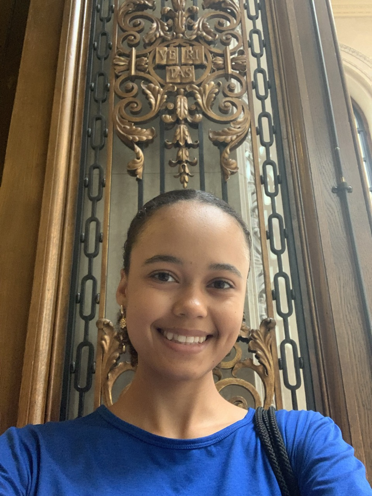

<div class="textcontainer">
<h3>About Me</h3>
<p class="margin"> </p>
<div class="center-row">
<p></p>
<p id="aboutme">
Hello! My name is Hallel Chery. I am a first-year at Harvard, and I am planning on concentrating
in Mechanical Engineering. The reason I chose this concentration is because I want to create products and
solutions to solve real-world problems for the benefit of humanity. I'm passionate about solving important
problems on Earth such as water scarcity and access to education, and I'm also interested in the space sector.
</p>
</div>
<br></br>
For fun, I enjoy assembling 3D models of machines, like my metal model of NASA's opportunity rover.
I also like to play piano and golf. I love listening to classical music. My favorite orchestral composer
is Antonio Vivaldi - my favorite symphony is The Four Seasons. For piano, I enjoy playing songs by
Johannes Sebastian Bach. I'm excited to learn all of the content covered in this class, and I plan
to put the skills gained to use in creating prototypes of solutions to major human problems on Earth and in space.
<br></br>
</div>